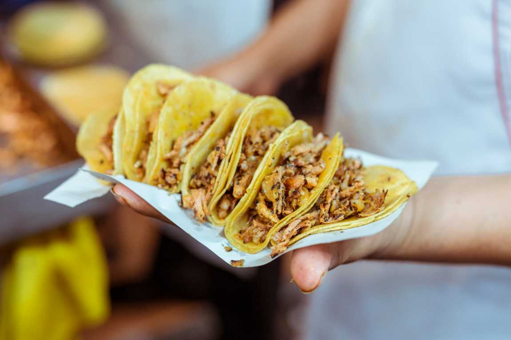
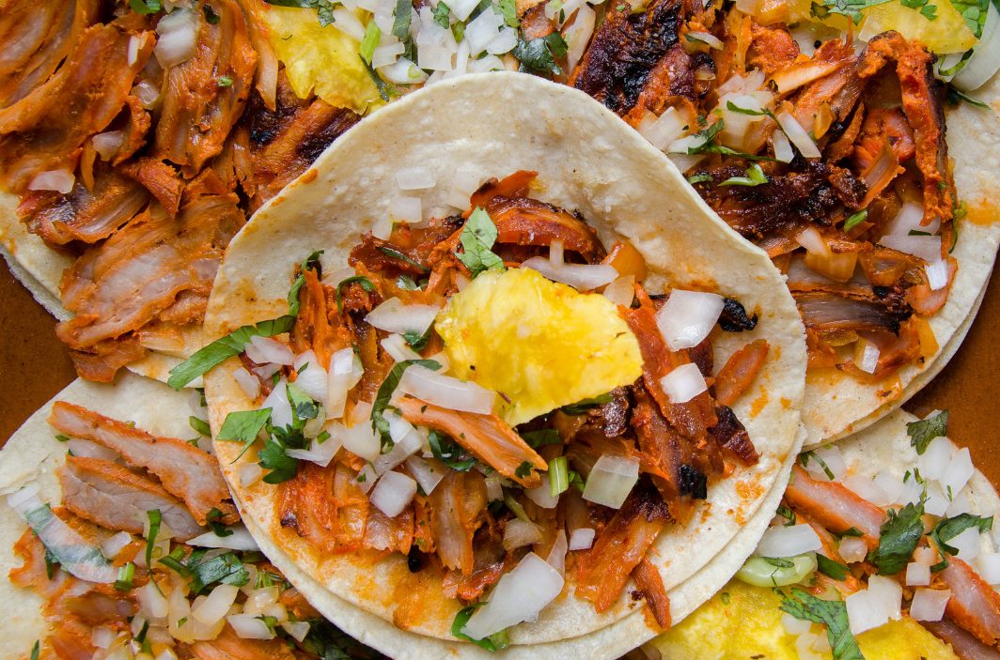
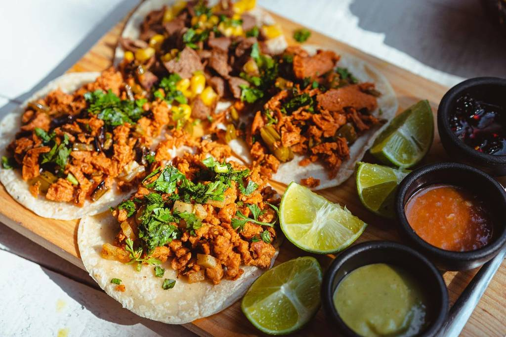

| 1 porción de 4Tacos al pastor1 porción de 4 | 1 porción de 4 - Q20.00 |
|---|---|
Tacos de canasta |
1 porción de 4 - Q15.00 |
Tacos dorados |
1 porción de 4 - Q18.00 |
Tacos de barbacoa |
1 porción de 4 - Q25.00 |
Tacos de carnitas |
1 porción de 4 - Q22.00 |
Tacos de guisado |
1 porción de 4 - Q20.00 |
Tacos de carne asada |
1 porción de 4 - Q25.00 |
Tacos de suadero |
1 porción de 4 - Q22.00 |
Tacos de pescado |
1 porción de 4 - Q30.00 |
Tacos de bistec |
1 porción de 4 - Q28.00 |
Tacos de cochinita |
1 porción de 4 - Q25.00 |
Tacos Gobernador |
1 porción de 4 - Q35.00 |
Tacos de Birria |
1 porción de 4 - Q30.00 |
Tacos de Camarón |
1 porción de 4 - Q35.00 |
Tacos árabes |
1 porción de 4 - Q22.00 |
Tacos de tripa |
1 porción de 4 - Q20.00 |
Tacos de cabeza |
1 porción de 4 - Q18.00 |
Tacos de cecina |
1 porción de 4 - Q28.00 |
Tacos placeros |
1 porción de 4 - Q20.00 |
Tacos de arrachera |
1 porción de 4 - Q35.00 |
Tacos de adobada |
1 porción de 4 - Q22.00 |
Tacos de lengua |
1 porción de 4 - Q28.00 |
Tacos de flor de Jamaica |
1 porción de 4 - Q18.00 |
Tacos de ojo |
1 porción de 4 - Q20.00 |
Tacos veganos |
1 porción de 4 - Q22.00 |
Tacos mañaneros |
1 porción de 4 - Q18.00 |
Tacos de papa |
1 porción de 4 - Q15.00 |
Tacos dorados de pollo |
1 porción de 4 - Q20.00 |
Tacos campechanos |
1 porción de 4 - Q25.00 |
Tacos de alambre |
1 porción de 4 - Q30.00 |
Tacos de buche |
1 porción de 4 - Q20.00 |
Tacos de longaniza |
1 porción de 4 - Q22.00 |
Tacos de obispo |
1 porción de 4 - Q25.00 |
Tacos de marlin |
1 porción de 4 - Q35.00 |
Tacos de machitos |
1 porción de 4 - Q22.00 |

